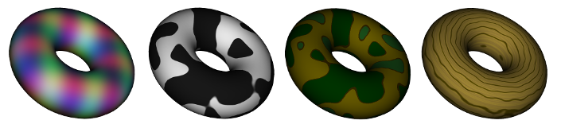

CS 424: Computer Graphics, Fall 2021
Lab 14: Procedural Textures
This is meant to be another genuinely short lab that you might finish during the lab period. As long as you come to lab and make a reasonable effort during lab, you will get full credit for Lab 14.
In this version of the lab, you will work with procedural textures in WebGL. The procedural textures will be implemented in a GLSL fragment shader. In addition, you will make it possible to scale the texture coordinates to change the number of times that the basic texture repeats on an object.
You will need a copy of the folder lab14-files from /classes/cs424. (Or you can download and extract the zip archive, lab14-files.zip.) The starting point for the lab is the file lab14.html, which already implements a couple of procedural textures. The other four files in the folder are the JavaScript files that are required by the program. You will only work on lab14.html. The program is based on the demo procedural-textures.html from Subsection 7.3.3
You will not turn in any work for this lab. You will get full credit for showing up and showing me some completed work at the end of the lab.
About 3D Procedural Textures
You have used procedural textures, such as marble and clouds, in Blender. In a procedural texture, the texture color is computed, based on texture coordinates, rather than sampled from an image. For a 3D procedural texture, there are three texture coordinates, (s,t,r), instead of two. Typically, object coordinates are used as texture coordinates, though they can of course be subject to a texture transformation. A 3D texture is a pattern in three-dimensional space. When it is applied to an object, it is as if the object is "carved" out of that pattern.
The original lab14.html has three procedural textures: a checkerboard texture, a cloud texture, and a marble texture. For clouds and marble, some kind of pseudo-randomness is needed. A common kind of pseudo-randomness for 3D textures is Perlin noise. The cloud texture is pure Perlin noise. For the marble texture, the Perlin noise is used to perturb a periodic function. In the program, Perlin noise is implemented by an open-source GLSL function. (No, I don't understand how it works.) See Section 7.3.3 for more details about procedural textures and Perlin noise.
Implementing the textures
The purpose of the lab is to add several new procedural textures. You should add new entries in the pop-up menu that selects the texture, and you should add code to the fragment shader to implement the textures. Here are some examples:

At least one of your new textures should not use Perlin noise. It should be some regular pattern, like the checkerboard. (Consider making the color components depend on sine functions, which are periodic. Sine functions were used to make the multi-colored texture on the left above. Another type of periodic function is f(t) = t − floor(t), a "triangular function" that is used in the last two examples in the demo.)
At least two of the new textures should use Perlin noise. They should not be trivial variations on the textures that are already defined. One option is to use Perlin noise as the basis for the pattern, but to use only a limited number of colors, depending on the noise value. (Perlin noise has a value between -1.0 and 1.0.) The "cow" texture and the "camo" texture in the illustration were made using this technique.
Ideally, however, one of your two noise textures should be created by using the noise to perturb a regular pattern. For example, the "wood" texture on the right above used a basic idea of making rings by using a sine function of the distance of texCoords.xy from (0,0). (I had to multiply the distance by a fairly large value to get the rings to be a reasonable size. And it probably would have worked better to use a function based on f(t) = t − floor(t).) But the rings were modified by adding a multiple of the noise function to the argument of the sine function (similarly to what was done for the marble texture). If you look closely, you will notice that the wood also has a subtler fine grain. This was created by mixing into the color a dark brown multiplied by a noise function, where the noise function was evaluated at vec3(32.0*cos(dist), 32.0*sin(dist), texCoords.z), and dist is again the distance of texCoords.xy from (0,0). The factor of 32.0 has the effect of greatly compressing the noise in the radial direction.